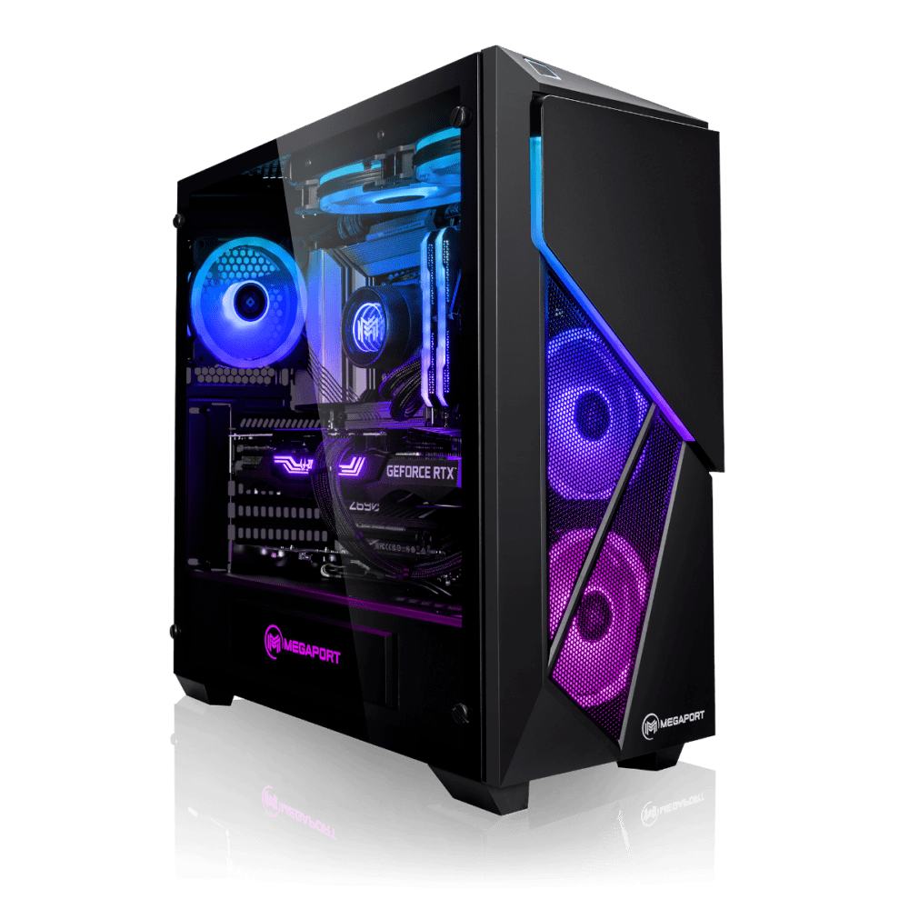

A propos de moi
Qui suis-je ?
Bienvenue sur mon Portfolio ! Je m'appelle LABARCHE Nathan et je suis un jeune développeur en pleine éclosion. Serieux, dynamique, à l'écoute et créatif, j'aime apprendre et évoluer auprès des plus experimentés. Je suis un développeur qui ne recule pas devant les défis qui me font face possédant une soif d'apprendre inépuisable. Si vous souhaitez en apprendre plus, vous pouvez cliquer juste en dessous. Ne vous inquiétez pas, ce n'est pas un virus !!!
Mes Compétences
Mon Parcours
2016 - 2017
DNB - Diplôme Nationale du Brevet
Mention : bien
Oral : 50% français / 50% anglais
2019 - 2020
Diplôme Général du Baccalauréat - Economique et Social
Mention : Assez Bien
2021 - 2023
BTS SIO - SLAM : Conception et développement d'applications
En cours d'obtention...
2021 - present
Technicien Support - Novelcom
Poste occupée en vue de mon alternance à la préparation de mon diplôme.
Realtion direct avec les clients.
Répondre aux demandes des clients afin d'améliorer les services proposés par l'entreprise.
Travail en équipe
Veille Technologie
Comment est constitué un ordinateur Gamer
Tout d'abord, définition ce qu'est une veille technologique. Concrétement, une veille technologique est un processus visant à se rendre au courant des dernières nouveautés d'un sujet. Nous parlons ici de veilles technologiques. Mais il existe plusieurs veilles comme la veilles commerciale ou encore la veille Juridique. En veille technologique, il y a plusieurs moyen de rester connecté à ce qu'il se passe autour de nous. Nous avons les articles papier et en ligne, les newsletter ou encore les forums ou les internanutes s'échangent des astuces, des infos et même des rumeurs. Aujourd'hui, j'ai décidé de vous présenter une veille technologique sur un sujet qui m'interesse depuis des années : Les composants d'un PC Gamer.
La carte mère
Il n'y a pas de Ordinateur sans carte mère. La carte mère est le maestro de l'ordinateur.
C'est elle qui va accueillir les composants et les faires fonctionner entre eux.Il existe
plusieurs
taille de carte mère comme ATX,miniATX ou même MicroAtx. Il faudra alors adapter ses composants
à sa
carte mère ou bien choisir sa carte mère en dernier. Souvent de base en plastique rigide, les
cartes
mères sont recouvert de circuits imprimés faites de cuivres et d'aluminium. La carte mère est
aussi
habillé de ports de connexion permettant ainsi la connectique avec les autres pièces qui
composent
votre
ordinateur.
Il s'y trouve aussi plusieurs emplacements qui viendront accueilir les autres
composants
que
nous allons voir ensemble.
Le processeur
Si la carte mère peut être considérée comme le cœur d’un système, le processeur est assimilé au cerveau. Il interprète et exécute les instructions qu’il reçoit. Ces dernières sont exprimées dans un langage binaire. Le processeur est une pièce indispensable pour le fonctionnement des programmes ou encore l’affichage-écran. Le processeur sert à l’échange de données entre composants informatiques, notamment en ce qui concerne le disque dur, la carte graphique ou la mémoire vive. Il permet ainsi d’interpréter, de coordonner et d’exécuter différents programmes. Pour vous épargner les aspect technique de la composition d'un processeurs, certains aspect son primordial lorsqu'on monte sonr ordinateur sois même. Les sockets sont constitués de petits trous disposés de manières spécifiques afin de se déposer sur l'emplacementsde la carte mère. Il faut donc bien vérifier ce que votre carte mère peut accueilir.
La carte graphique
La carte graphique est l'élément qui vous permettra de faire afficher les données graphique sur votre écran. La carte graphique est certainement le composant le plus connu et le plus prisé par les amateurs de tech. Ses prix n'ont fait qu'augmenter avec le temps en doublant le revente par rapprot au prix de vente initiale. La cause principale de cette augmentation est l'emergence des Rig crypto visant à cumulé la puissance de plusieurs carte graphique afin de faire fonctionner le mécanisme de blockchain. Avec l'arrivée de la technologie RTX, Nvidia a révolutionné la carte graphique. le Ray tracing est une technique d'imagerie numérique qui permet de simuler le parcours des rayons de lumière. (Wikipédia) La dernière colection de NVIDIA est la série 40 avec en tête d'affiche la 4090 pouvant atteindre près de 2000 € .
Barettes de RAM
Selon le commerçant spécialisé dans les composant GROSBILL, "La RAM est en quelque sorte la mémoire à court terme de votre PC. À l'inverse, le disque dur ou SDD d'un ordinateur est un stockage à long terme où les informations sont conservées de manière plus ou moins permanente." En d'autre termes, la RAM est ce qu'on appel la mémoire vive. C'est ce qui va permettre de lancer certains programmes plus rapidement que d'autres. Lea barettea de RAM est représentée sous forme de longue bande réctangulaire fine. Les RAM sont répertorié par DDR et les GHz qui détermine le type de mémoire et la puissance.
L'alimentation
L'alimentationest donc le moteur de votre ordinateur. Sans lui la machine ne démarre pas. N'importe quelle alimentation n'est pas forcément adapté à n'importe quelle config. L'aliementation se fait en fonction de votre consommation d'energie ainsi de ce qu'as besoin vos ordinateur pour être alimenté. Plusieurs site tel que Outervision vous permettent de calculer l'aliemntation dont vous avez besoin en fonction de votre configuration et de votre utilisation.
Et le reste ?
Enfin il reste quelques composant tel que les SSD ou encore les disque dur SATA qui complèteront votre configuration. S'ajoute à cela l'élément qui permettra à votre ordinateur de ne pas surchauffer : le refroidisseur. Il existe deux types de refroidisseur: les Ventirad qui est un ventilateur couplé à la puissance d'un radiateur ainsi que le Watercooling. Le Watercooling lui utilise l'eau afin de refroidir nos composants. L'eau est refroidi dans un tuyau puis passe par le waterblock qui lui est pausé sur le composant que l'on veut refroidir (souvent le processeur). Enfin il existe d'autres composants bonus tel que le lecteur CD, la carte wifi, la carte blutooth...
J'éspère qu'en plus de vous avoir intéressé ma présentation a pu vous aider ou vous éclaircir certains points pour votre prochaine configuration d'ordinateur.
Mon Portfolio
Voici un exemple de Projet réalisé durant mon BTS SIO.


Contactez Moi
Juste ici !
Voici quelques informations qui vous seront utiles ! N'hésitez pas à me contacter si vous avez besoins de renseignement(s).
: Franconville, France
: nathan.labarche@gmail.com
: IMIE Paris, Levallois Perret
: (+33)658668514
: Français, Anglais